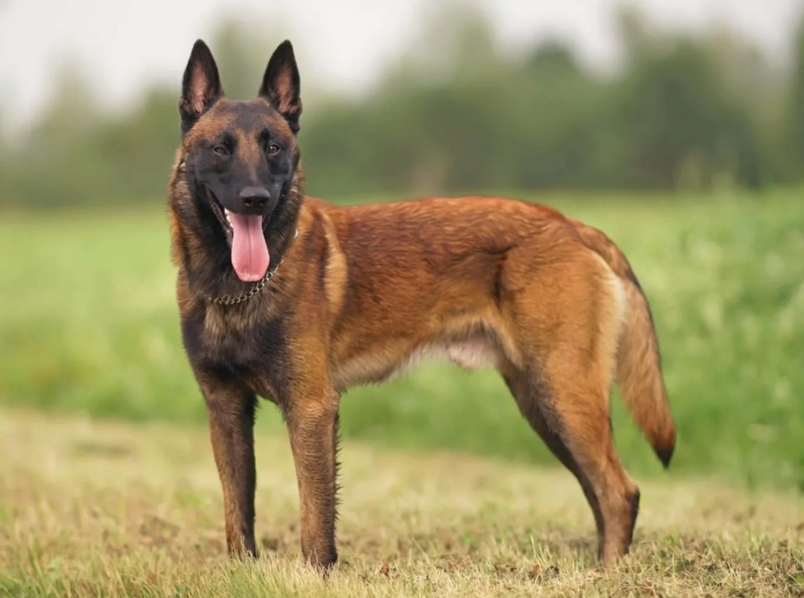

Коротка інформація
Моя улюблена собака - Бельгійський Малінуа.
Бельгійська вівчарка малінуа - це собака середнього чи великого розміру, атлетичної худорлявої статури та короткої щільної шерсті.
Представників цієї породи часто плутають з німецькою вівчаркою, хоча вони більш квадратні в профіль, з більш тонкими кістками та витонченими головами
Характер та особливості
- Порода: Бельгійський Малінуа
- Розмір: Середній/Великий
- Вага: 25–30 кг
- Характер: Активний, відданий, розумний
Бельгійська вівчарка малінуа - це порода не для тих, хто хоче "просто собаку". Це ласкавий, але відданий компаньйон, який захищатиме свій будинок і сім'ю та потребує досвідченого власника.
Чому мені подобається ця порода
Малінуа - це поєднання високого інтелекту, безмежної відданості, вибухової енергії та унікальних робочих якостей. Вони - універсальні службові собаки (поліція, МНС, охорона), що легко навчаються, швидко адаптуються та здатні самостійно приймати рішення. Ці вівчарки стають ідеальними супутниками для активних людей.